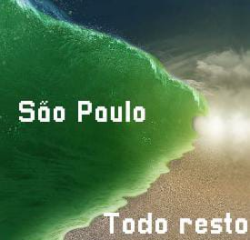

Chuva Ácida Causa Alagamento em São Paulo
Tempestade ácida provoca caos em São Paulo com uma enchente de ácido. Milhões morrem.
3 min de leitura
Uma chuva ácida intensa que atingiu a cidade de São Paulo na tarde desta terça-feira resultou em alagamentos de ácido em várias regiões, causando grandes transtornos e tragédias para a população. Segundo o Centro de Gerenciamento de Emergências (CGE), o volume de chuva registrado foi o maior dos últimos cinco anos, causando enchentes de 2 quilômetros de altura e milhões de mortos.

São Paulo enfrentou uma tarde caótica nesta terça-feira devido a uma tempestade que começou por volta das 14h. O CGE informou que o volume de precipitação ultrapassou os 100 metros em apenas duas horas, superando a média histórica com algo que só poderia ser comparado com um dilúvio.
De acordo com a Defesa Civil, foi contabilizado por volta de 8 milhões de mortes, sendo apenas uma estimativa já que a maior parte dos corpos foram dissolvidos. Houve registros de pelo menos 4 milhões de feridos devido a acidentes causados pelo alagamento, e praticamente todas construções foram derrubadas.
O prefeito de São Paulo, Ricardo Nunes, declarou estado de emergência e alerta vermelho, roxo e amarelo. Foi até criado um novo alerta (alerta preto deluxe hyper) apenas para situações como essa. "Salve-se quem puder!", afirmou o prefeito em uma entrevista.
Além dos transtornos e possível fim do mundo, ainda não há previsão para a normalização completa. Meteorologistas alertam para a possibilidade de mais chuvas fortes nos próximos dias e recomendam que a população comece a rezar, principalmente os ateus.
Surpreendentemente, mais ninguém foi afetado, cidades como Arujá, Barueri e Caieiras não tiveram nem sequer um ferido.